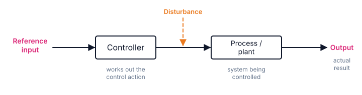
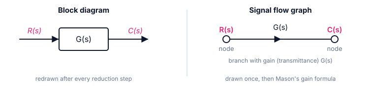

Control is everywhere: aircraft and spacecraft, process plants, homes and buildings, cars and trains, mobile networks. It also exists in nature. The pancreas regulates blood sugar, adrenaline raises the heart rate in "fight or flight", our eyes follow a moving object and our hands place an object precisely where we want it.
A system is an organised collection of parts that work together toward one goal: inputs go through processes and produce outputs. A control system is a set of subsystems and processes (plants) assembled to obtain a desired output with desired performance for a specified input.
A short history
| When | Milestone |
|---|---|
| about 300 BC | Ktesibios' water clock: liquid-level control with a float valve. |
| 1600s | Drebbel's incubator for hatching eggs (temperature control); Papin's safety valve for steam pressure (1681). |
| 1745 to 1788 | Windmill speed control by pitching the blades; Watt's fly-ball governor for steam engines. |
| 1868 and 1877 | Maxwell's stability analysis of governors; Routh's stability criterion (Adams Prize, 1877); Lyapunov's theory (1892). |
| 1912 | Nils Gustaf Dalén receives the Nobel Prize in Physics for automatic regulators used with gas accumulators in lighthouses and buoys. |
| 1920s to 1930s | Automatic ship steering (1922), the PID controller (described by Callender and others in 1936), Nyquist's (1932) and Bode's feedback amplifier theory. |
| 1948 | Evans' root locus method. |
| 1960s onward | State-variable ("modern") control: Bellman and Kalman in the USA, Pontryagin in the USSR. Today: navigation, space, smart homes, chemical processes, entertainment. |
Open loop and closed loop

An open-loop system cannot correct for disturbances because it never measures what it produced. Everyday examples: a hand dryer (blows as long as your hand is there, however dry it is), a timer-based washing machine, a bread toaster, a timer clothes dryer, a light switch and the volume knob on a stereo.

A closed-loop (feedback) system measures the output, compares it with the reference and acts on the difference. Examples are room temperature control with a thermostat, an electric iron with a bimetallic strip, and the human body's temperature regulation. Feedback makes a system less sensitive to disturbances and parameter changes, at the cost of more parts and a possible loss of stability.
| Open loop | Closed loop |
|---|---|
| Simple, cheap, easy to build | More complex and costly |
| Cannot correct disturbances | Corrects disturbances and parameter changes |
| Accuracy depends on calibration | Accurate, because the error is measured |
| Always stable if the plant is stable | Can become unstable if the gain is too high |
A regulator holds the output steady against unknown disturbances; a servo (tracking) system follows a changing reference. Control done by a person (driving a car, a fan switched by hand) is manual; control done by machines alone (a thermostat, an air conditioner) is automatic.
Classifying control systems
- Linear or nonlinear. A linear system obeys superposition: additivity, $f(x_1 + x_2) = f(x_1) + f(x_2)$, and homogeneity, $f(ax) = af(x)$. Strictly linear systems do not exist in practice, but most components are linear over a limited range of signals, so we model them as linear (for example $y = 3u$ or $y = -2u$). Road adhesion against wheel creep, or a valve's opening against temperature, are nonlinear.
- Time-invariant or time-varying. $y(t) = -2u(t)$ is time-invariant; $y(t) = 2u(t) - 3t$ has a parameter that changes with time.
- Lumped or distributed. Lumped systems are described by ordinary differential equations, such as $M\ddot{x} + C\dot{x} + kx = f$. Distributed systems (a long transmission line, heat flow in a rod) need partial differential equations.
- Continuous or discrete. All signals are functions of continuous time $t$, or some are known only at sampling instants $x[n]$ (a microprocessor speed controller).
- Deterministic or stochastic. The response to a given input is predictable and repeatable, or it is random.
- SISO or MIMO. One input and one output, or several of each.
Two systems are analogous when their models have the same mathematical form, even though the variables mean different things. A spring-mass-damper and a series RLC circuit are the classic pair (Lesson 2).
Mathematical models
A model is a set of equations, usually differential equations, that describes how the outputs respond to the inputs. We use models for simulation, prediction, diagnosis, performance evaluation and controller design. Physical laws give the structure (linear or nonlinear, and the order); experiments estimate or validate the parameters.
- Black box: only the input and output data are known. For example, a room heater's valve position $x$ (0 to 10) against room temperature $y$ (0, 3, 6, 12, 20, 33 °C at $x$ = 0, 2, 4, 6, 8, 10) is fitted well by $y \approx 0.31x^2 + 0.046x + 0.64$.
- Grey box: the data plus some knowledge of the internal behaviour.
- White box: complete knowledge of the internal dynamics, so the model comes from physical laws.
The approach is always the same: define the system and its parts, state the assumptions, write the differential equations, solve for the outputs, check the solutions against the assumptions, and redesign if needed. Plant models come in two forms: a transfer function $G(s)$ (frequency domain) or state-space equations $\dot{x} = Ax + Bu$, $y = Cx + Du$ (time domain).
The transfer function
The Laplace transform turns linear constant-coefficient differential equations into algebraic equations: differentiation in time becomes multiplication by $s$. The transfer function is the ratio of the Laplace transform of the output to that of the input, with all initial conditions zero:
$$G(s) = \frac{C(s)}{R(s)} = \frac{b_m s^m + b_{m-1}s^{m-1} + \dots + b_0}{a_n s^n + a_{n-1}s^{n-1} + \dots + a_0}$$
Worked example. Find the transfer function of $\ddot{y} + 12\dot{y} + 32y = 32u(t)$ and its unit-step response.
Transform with zero initial conditions: $s^2Y(s) + 12sY(s) + 32Y(s) = 32U(s)$, so
$$G(s) = \frac{Y(s)}{U(s)} = \frac{32}{s^2 + 12s + 32} = \frac{32}{(s + 4)(s + 8)}$$
For a unit step, $U(s) = 1/s$ and partial fractions give $Y(s) = \dfrac{1}{s} - \dfrac{2}{s + 4} + \dfrac{1}{s + 8}$, so $y(t) = 1 - 2e^{-4t} + e^{-8t}$. Partial fractions come in three flavours: real distinct roots, real repeated roots and complex roots.
Block diagrams
A block diagram is a shorthand picture of the cause-and-effect relations in a system. It has four components: signals (arrows), blocks (the transfer function multiplies its input), summing junctions (add or subtract signals) and pick-off (take-off) points (send the same signal, undiminished, to several places).
| Name | Expression |
|---|---|
| Feed-forward transfer function | $C(s)/E(s) = G(s)$ |
| Open-loop transfer function | $B(s)/E(s) = G(s)H(s)$ |
| Closed-loop transfer function (control ratio) | $C(s)/R(s) = \dfrac{G(s)}{1 \pm G(s)H(s)}$ |
| Feedback ratio (primary feedback ratio) | $B(s)/R(s) = \dfrac{G(s)H(s)}{1 \pm G(s)H(s)}$ |
| Error ratio (actuating signal ratio) | $E(s)/R(s) = \dfrac{1}{1 \pm G(s)H(s)}$ |
| Characteristic equation | $1 \pm G(s)H(s) = 0$ |
The upper sign is for negative feedback. The denominator of the closed-loop transfer function, set to zero, is the characteristic equation; its roots are the closed-loop poles. With $H(s) = 1$ the loop is a unity feedback system.
Reduction rules

- Blocks in cascade: $G_1G_2$.
- Blocks in parallel: $G_1 \pm G_2$.
- Moving a summing point behind a block: multiply the other input by $G$. Moving it ahead of a block: divide by $G$.
- Moving a pick-off point behind a block: add $1/G$ on the branch. Moving it ahead of a block: add $G$ on the branch.
- Eliminating a feedback loop: $\dfrac{G}{1 \pm GH}$.
- Two neighbouring summing points can be swapped.
Reduce in this order: combine cascades, combine parallels, eliminate inner loops, move summing and pick-off points to untangle overlapping loops, and repeat.
Worked example A. The $H_2$ loop starts at the output but ends between $G_1$ and $G_2$, so it overlaps the $H_1$ loop. Move the $H_2$ summing point back, ahead of $G_1$: the signal now passes through $G_1$, so the branch becomes $H_2/G_1$. The two summing points ahead of $G_1$ can be swapped, and the loops untangle:
- Positive loop $G_1G_2$ with $H_1$: $\dfrac{G_1G_2}{1 - G_1G_2H_1}$.
- Cascade with $G_3$ and close the $H_2/G_1$ loop: $\dfrac{G_1G_2G_3}{1 - G_1G_2H_1 + G_2G_3H_2}$.
- Close the unity loop:
$$\frac{C(s)}{R(s)} = \frac{G_1G_2G_3}{1 - G_1G_2H_1 + G_2G_3H_2 + G_1G_2G_3}$$

Worked example B. The inner loop around $G_2$ gives $\dfrac{G_2}{1 + G_2H_2}$. The loop through $H_1$ around $G_1$ gives $\dfrac{G_1}{1 + G_1H_1}$. These are in cascade, and $H_3$ closes the outer loop:
$$\frac{Y(s)}{R(s)} = \frac{G_1G_2}{1 + G_1H_1 + G_2H_2 + G_1G_2H_3 + G_1G_2H_1H_2}$$
The last term $G_1G_2H_1H_2$ is the product of two loops that share no node. Mason's gain formula below produces such terms automatically.
Several inputs
For a linear system, find the output due to each input with the other inputs set to zero, then add the results (superposition). With a reference $R$ and a disturbance $U$ entering between $G_1$ and $G_2$ of a unity loop, $C = \dfrac{G_1G_2}{1 + G_1G_2}R + \dfrac{G_2}{1 + G_1G_2}U$.
Signal flow graphs and Mason's rule

S. J. Mason's signal flow graph (SFG) represents a set of linear algebraic equations as nodes (variables) joined by directed branches (gains). Terms: input node (only outgoing branches), output node, chain node (in and out), forward path (input to output, no node twice), loop (closed path), self loop, path gain and loop gain (product of branch gains), touching and non-touching loops. Mason's gain formula gives the transfer function in one step:
$$T = \frac{1}{\Delta}\sum_k P_k\Delta_k, \qquad \Delta = 1 - \sum L_i + \sum L_iL_j - \sum L_iL_jL_k + \dots$$
$P_k$ is the gain of forward path $k$, the sums run over single loops, pairs of non-touching loops, triples, and so on, and $\Delta_k$ is $\Delta$ with every loop that touches path $k$ removed. Check example B: $P_1 = G_1G_2$; loops $-G_1H_1$, $-G_2H_2$, $-G_1G_2H_3$; one non-touching pair $(-G_1H_1)(-G_2H_2)$; every loop touches the path, so $\Delta_1 = 1$. The same answer appears at once.